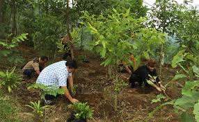
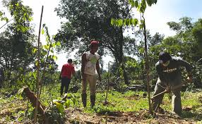

Akar Masalah
Restorasi lingkungan tidak bisa dilakukan dengan mudah, terutama karena polusi sudah mulai mencemari sejak ratusan tahun yang lalu. Sejak masa Revolusi Industri, aktivitas manusia seperti penggunaan bahan bakar fosil eksesif, pembuangan limbah industri, serta penggunaan bahan kimia berbahaya telah memberi dampak jangka panjang terhadap Bumi. Kerusakan yang tersebut tidak permanen, tetapi perlahan-lahan di terakumulasi dan memengaruhi ekosistem.

Cara Menyelesaikan
Namun, itu bukan berarti mustahil. Dengan kebijakan dari pemerintah, upaya pemulihan lingkungan masih memungkinkan. Beberapa hal yang bisa dilakukan adalah reboisasi, mendaur ulang serta penggunaan energi terbarukan dapat menjadi hal positif. Bukan hanya pemerintah, tetapi kita juga bisa. Gaya hidup kita berpengaruh besar terhadap pencemaran di Bumi. Bila mayoritas masyarakat mengubah kebiasaan buruk membuang sampah sembarangan, menggunakan plastik berlebihan, boros listrik/air, maka pencemaran dapat berkurang. Perubahan kecil yang dilakukan secara konsisten oleh banyak orang akan memberikan dampak yang besar dalam jangka panjang.

Resolusi
Restorasi lingkungan tidak bisa dilakukan dengan instan dan membutuhkan waktu, biaya, serta komitmen yang teguh. Akan tetapi, dengan konsistensi, kualitas lingkungan dapat memperbaiki dirinya secara bertahap sehingga terjaga kembali untuk masa depan yang lebih baik.